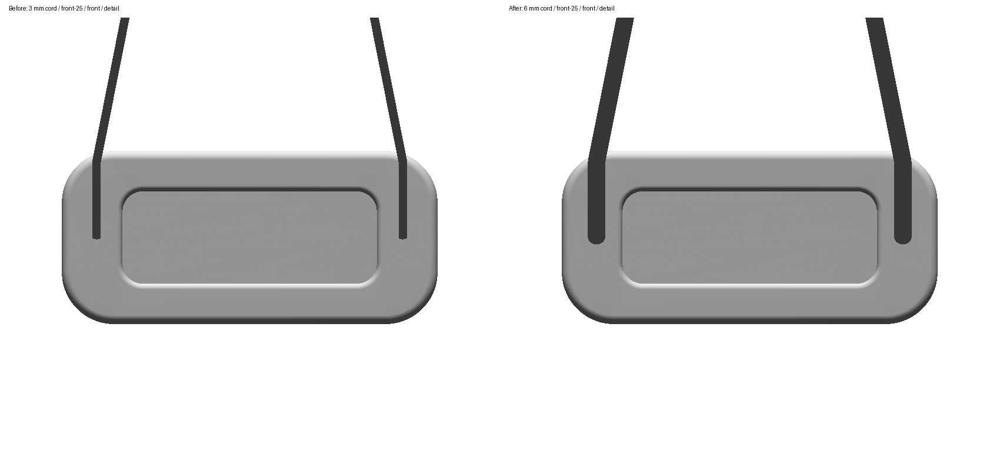
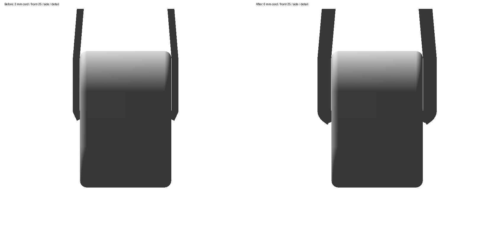
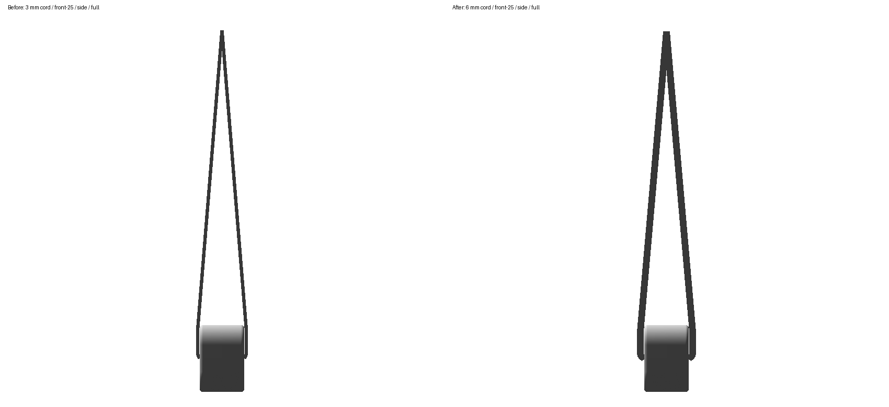
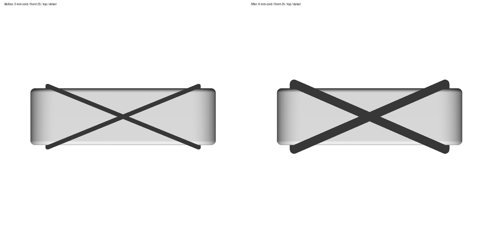
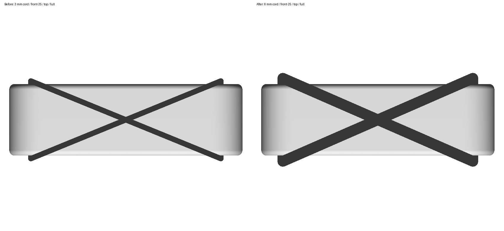
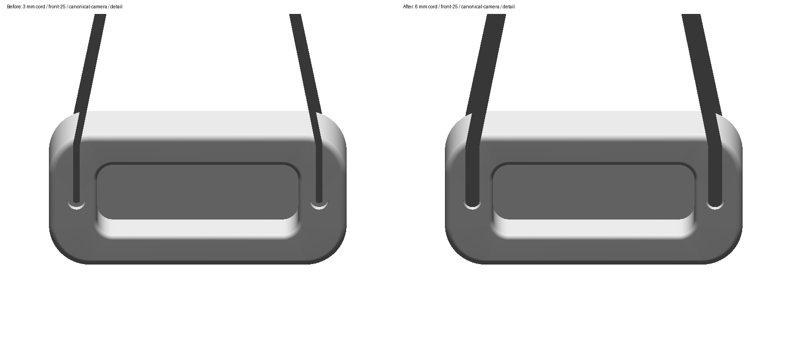
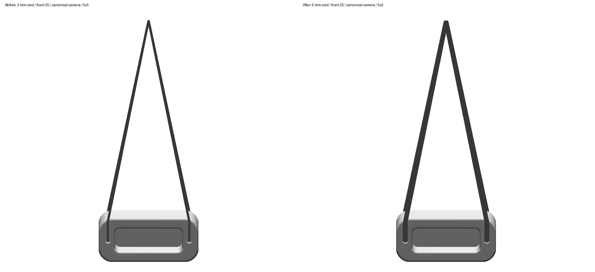
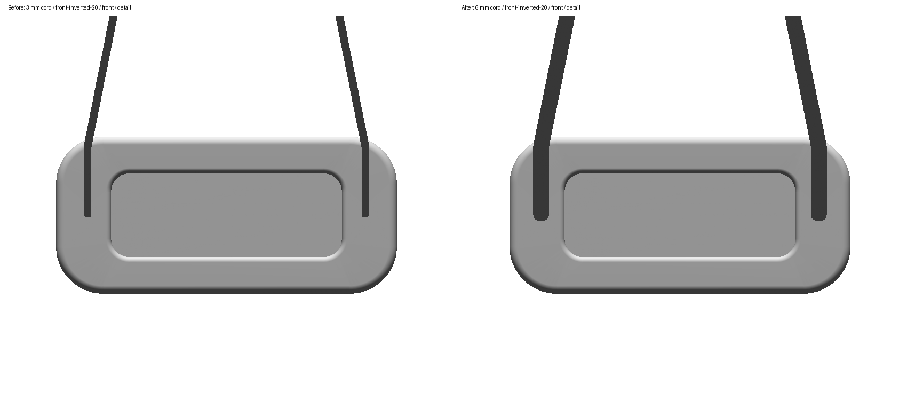
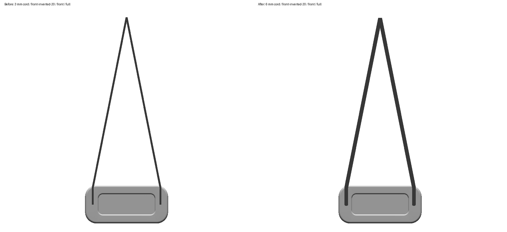
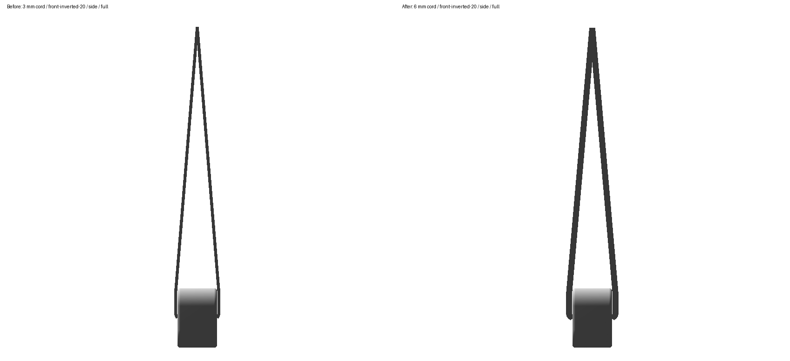

Before 3 mm diameter left; approved native-solved 6 mm diameter right. The manufacturer specifies 6 mm cord. Actual unchanged USDZ geometry and exact stored route caches, transformed by each canonical pose. Each pair shares scale and centers on the body. Detail views show the board and nearby cord; full views retain the complete fixed-support lead. Native z-buffer front/side/top projections with true occlusion; these are technical views, not app screenshots. The four strand terminals remain at their native entrance wells. Canonical-camera views additionally use each saved pose camera direction, including prior reverse/inverted face corrections. No unseen connection is inferred.

front-25 / front / detailfront-25 / front / full

front-25 / side / detail

front-25 / side / full

front-25 / top / detail

front-25 / top / full

front-25 / canonical-camera / detail

front-25 / canonical-camera / full

front-inverted-20 / front / detail

front-inverted-20 / front / fullfront-inverted-20 / side / detail

front-inverted-20 / side / fullfront-inverted-20 / top / detailfront-inverted-20 / top / full